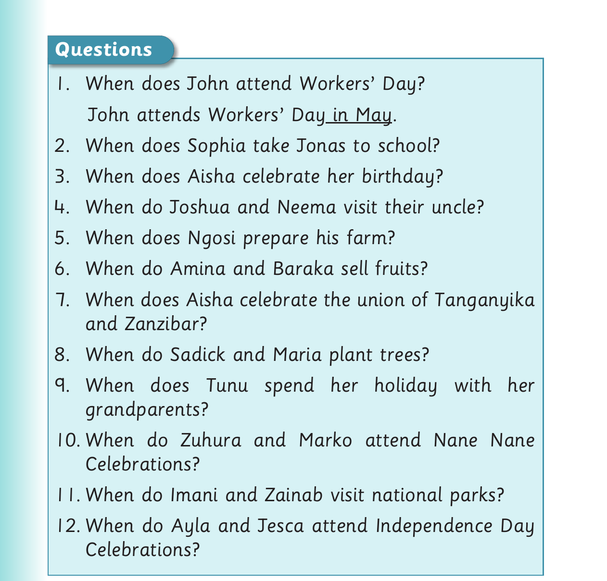

Months of the year - questions continued

Questions 1. When does John attend Workers’ Day? John attends Workers’ Day in May.
2. When does Sophia take Jonas to school?
3. When does Aisha celebrate her birthday?
4. When do Joshua and Neema visit their uncle?
5. When does Ngosi prepare his farm?
6. When do Amina and Baraka sell fruits?
7. When does Aisha celebrate the union of Tanganyika and Zanzibar?
8. When do Sadick and Maria plant trees?
9. When does Tunu spend her holiday with her grandparents?
10. When do Zuhura and Marko attend Nane Nane Celebrations?
11. When do Imani and Zainab visit national parks?
12. When do Ayla and Jesca attend Independence Day Celebrations?